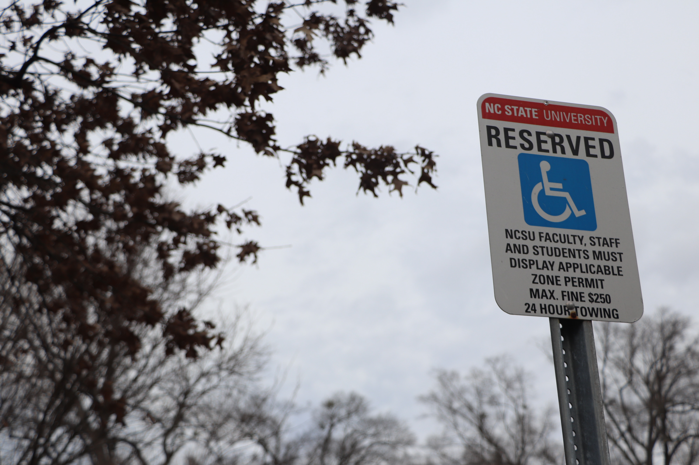
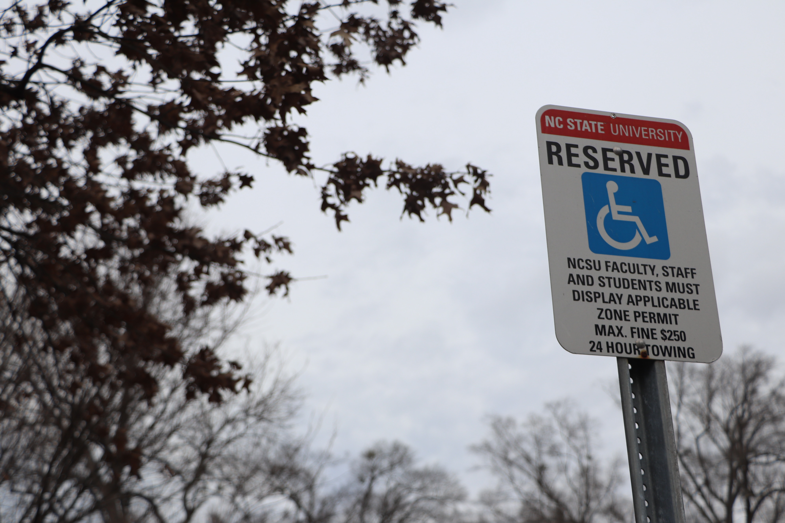
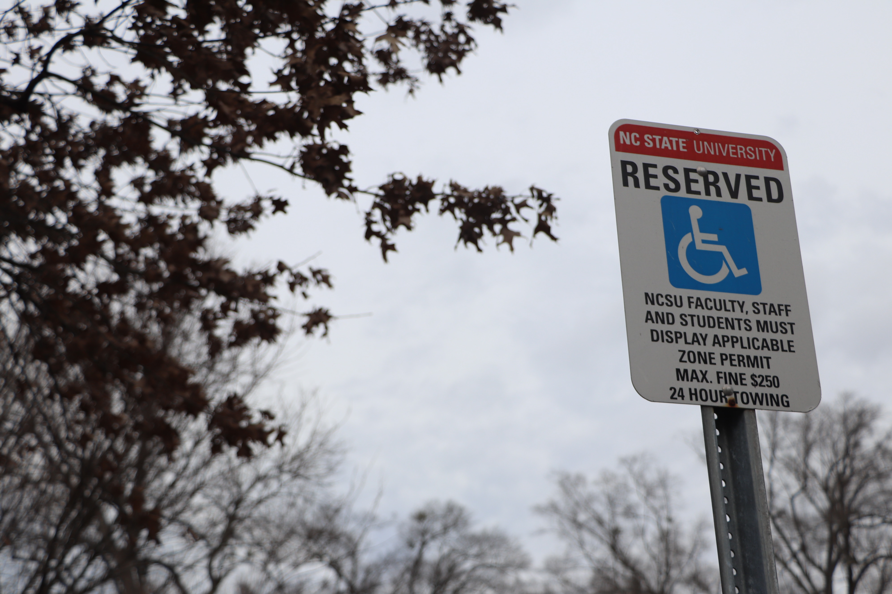

Wayfinding: (noun)
the process or activity of ascertaining one's position and planning and following a route.
SUCCESSFUL WAYFINDING
Successful wayfinding design should make the user feel at ease in the decision making process before and during their journey.
While many clients believe wayfinding problems can simply be solved by signs, it actually must be considered from the very start of a project and be an integral part of the design process of a space. It has implications from every aspect of a design and it must consider operational tie-ins. This includes where stairs are installed versus ramps, or how to incorporate both into a design, without disrupting the essence of a space. In order for a wayfinding design schema to be successful in an outdoor environment, it must address an appropriate audience, have intuitive environmental and architectural cues, and have signage that lists information in a hierarchal manner and is approached systematically.
UNSUCCESSFUL WAYFINDING
It is assumed that the architect or landscape architect building the environment has enough knowledge of wayfinding to execute it perfectly. Potential wayfinding obstacles include signs that blend into their environment, circular, confusing non-right angled corridors, complexes with indistinguishable buildings, and entrances to buildings that are hidden. When a user experiences issues with wayfinding and feels lost or confused, negative emotions like stress and discomfort will occur.
Defining an appropriate audience is the first step to creating a successful wayfinding design schema.
FREQUENT USERS VS FIRST TIME USERS
As most regular users are familiar with the site and can “rely more on past experiences to navigate a campus or facility” (VanderKlipp, Mark), wayfinding should be addressed to first-time visitors and the potential needs of users. This however, does not mean that frequent users are familiar with every area within an environment. Some frequent users may be quite unfamiliar with a certain location or building, even if they have visited that area once of twice. Therefore, the audience for wayfinding can be geared towards first-time users and less-frequented users alike.
MENTAL STATE OF FIRST TIME USERS
While keeping in mind audiences, one should consider the user’s mental state. Many first-time visitors don’t feel comfortable in an unfamiliar environment, which resorts to stress and nervousness. “The greater the level of distraction or stress, the less able a visitor may be to grasp complex destination terminology or direction-giving.” (Van-derKlipp, Mark) When designing a wayfinding system, it is essential to gauge how much stress the user could possibly be in, and then gear how in-depth the language and wording is. Providing confusing language or extremely in-depth descriptions of locations will not be in favor to someone who is in an unstable or negative mental state.
ACCESSIBILITY & ROUTE CONFUSION
Designing wayfinding for people of all abilities will help limit the length of routes for users who may not be able to take stairs or go up and down a large incline, and lesson confusion of decisding which rouute to take and how to best get to their destination.
PREPARING FOR USERS
Taking appropriate measures to narrow down the correct target audience will help better prepare users on what type of wayfinding design is needed and correctly identify what information should
be included.

Designing a successful wayfinding design schema taps into the users' emotional responses through environmental and architectural cues. The ability to easily navigate through a space is commonly known as when a user has a "sense of direction."
ENVIRONMENTAL & ARCHITECTURAL CUES
Environmental cues include things like how vegetation is planted and trimmed, the pavement material, where pathways intersect and lead to, urban interventions like trash bins, bicycle racks, light poles, seating islands and shading pavilions, and where the main points of buildings avoid or block sight lines.
Architectural cues include indistinguishable buildings with easy-to-recognize entrances, perhaps with landscaping features to enhance the pathway to enter.
INTUITIVE DESIGN
While it may seem to be overly detailed or simply unimportant, these elements assist in intuitive design, which leads the user by intuition, where the correct pathway becomes self-evident. Recognizable landmarks, like sculptures, large and unique artworks, and water features, is another great tactic where users can “remember where they’ve been and provide a ‘speakable’ reference when giving guidance to visitors.” (Van-derKlipp, Mark) These elements combined will assist in controlling user circulation, thus minimizing user confusion, congestion in areas with heavier traffic, and routing pedestrians along select pathways. This will assure quiet zones are less frequented. “Wayfinding design features need to work together and also support operational wayfinding elements.” (Carpman, Janet and Grant, Myron)
EFFORTLESS NAVIGATION
Environmental and architectural cues working together can formulate the fundamental basis that is wayfinding design, and when working together with appropriate signage can become a harmonious team in which the user effortlessly guides themselves through a space.
When providing signage in select areas, they must be styled according to its’ immediate surroundings, the information heir in must be structured consistently and the information must have established hierarchy. Successful signage design “involves knowing where you are, knowing your destination, knowing and following the best route to your destination, being able to recognize your destination upon arrival and reversing the process to find your way back out.” (Carpman, Janet and Grant, Myron)
ROLES OF SIGNS
Signs should either point out a specific building, location or point of reference. Information must be pointed out as it is encountered, including “names of buildings, compenent areas, entrances and elevators to move people longer distances, and follow with detailed information about the destinations in a given area. This is a more effective way of providing the guidance that people need when they need it, and not overwhelming them with too much information.” (Van-derKlipp)
INFORMATION ON SIGNS
Language on signs must be considered carefully. There must not be inconsistent or incorrect directions given or lengthy descriptions that are unclear. Signs must have literal meaning and must be easy to read, avoiding confusing terminology, so the user does not have to second-guess where they are or where they need to go. They must show displays of systematic structure, which may include color-coding and perhaps contrasting colors to the environment, bringing in brand identity, choosing material themes (keeping certain signs in one material and others in a different material), and location themes, keeping the location of certain signageconsistent.
INCORPORATING SIGNAGE
While many professionals may believe that wayfinding signage will aesthetically detract with the immediate environment, these same signs can be incorporated in a way that is both aesthetically pleasing and functional. Signs do not have to be an eye-sore. They can be designed in a way that enhances the environment instead of detracts from it. This can be achieved through various intentional choices: the style of sign, the material it is built in, and the font choices within the sign, to name a few. They should fit the style of the environment. If a university values traditional and historic architecture, then the signage should reflect tradition, and if a hospital is brand new and built with modern aesthetic, signs should be modern as well. Imagine constructing a brand new, sleek, modern sign in the middle of a historic site. It simply does not fit its’ environment and intended audience.
SIGN LOCATION
Considering sign location is crucial, as well. Carefully selected land-scaping must be incorporated so that the sign is the dominated and highlighted feature of the space, as opposed to signs that are hidden away or not visible to the user. It must be placed in a location where it is easily sighted from a distance, but is not so large that it takes up the entire sightline, detracting from the architecture itself.
UNITY IN SIGNAGE
Signage in unity with environmental and architectural cues and the correct target audience will lead to successful wayfinding design schema.


 
